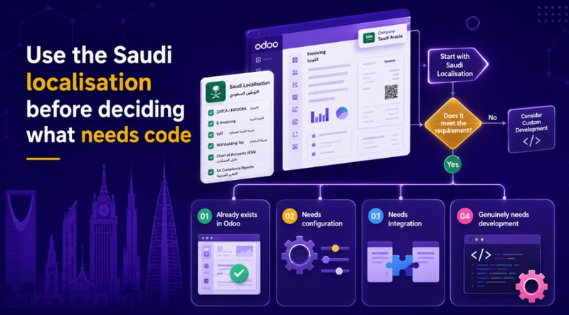
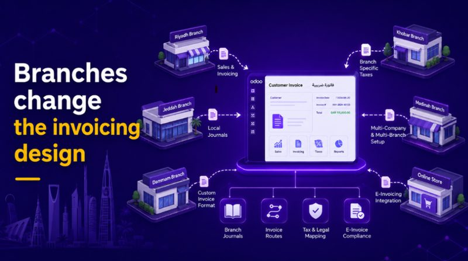
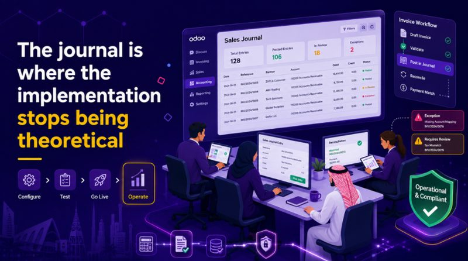
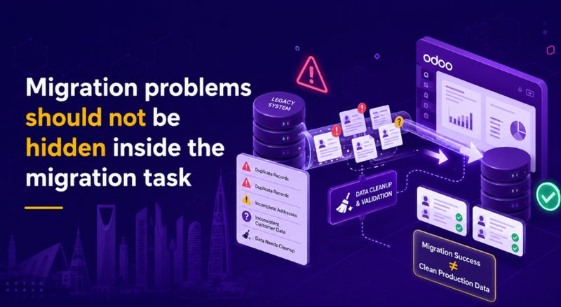
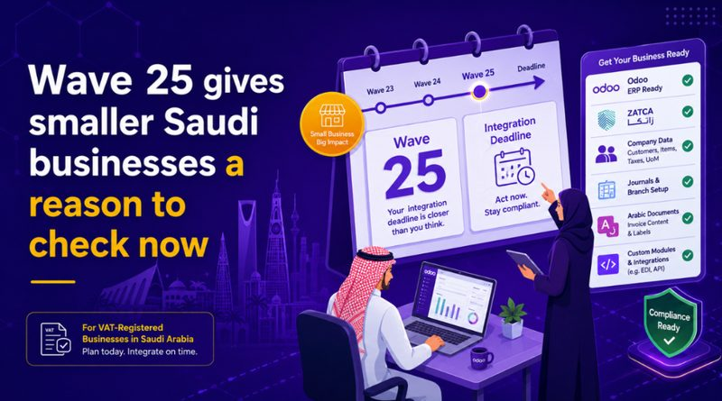

A Saudi company can have Odoo installed, Accounting configured and invoices coming out correctly on screen, yet still have work left before its invoicing process is ready for ZATCA Phase 2.
The gap is usually not another ERP feature. It is in the details around the transaction: company and customer records, Arabic invoice data, the sales journal being used, branch arrangements, external integrations and any custom code sitting between the sale and Accounting.
This is where Odoo implementation in Saudi Arabia becomes less about installing modules and more about understanding how the business actually invoices.
SoftwareDisruption approaches these projects from that direction. We are an Odoo Partner, but the starting point is still the operating problem rather than the product. The same principle runs through our software consulting work: establish what the business needs the system to do before deciding what should be configured, integrated or built.
There is also a current reason for Saudi businesses to look closely at that setup. ZATCA announced Wave 25 on 24 July 2026. It covers targeted taxpayers whose revenues subject to VAT exceeded SAR 187,500 during any of 2022, 2023, 2024 or 2025, with integration required by 1 February 2027 for businesses selected in the wave.
At that threshold, Phase 2 is no longer mainly a large-enterprise ERP issue.
A Working PDF does not tell you much about the ZATCA Setup
Take a normal B2B invoice.
The customer is already in Odoo. Sales confirms the order. Finance creates the invoice. VAT looks right and the PDF looks fine.
The important information started accumulating before that invoice was created.
The seller details came from the company record. Customer information came from master data. The transaction belongs to a particular journal. A branch may be involved. The invoice may need Arabic and English. Another application may have supplied some of the data before Accounting ever saw it.
If one of those inputs is wrong, the visible invoice can still look perfectly ordinary.
That is why data preparation deserves more attention than it usually gets during an ERP project.
It is easy to spend meetings discussing dashboards and approval flows while assuming customer and company records are housekeeping. In a Saudi invoicing implementation, those records sit much closer to the compliance process.
The same issue appears in wider business and accounting technology work. Reports and invoices are only the visible end of the system. The reliability of what comes out depends on what entered the process much earlier.
For an existing Odoo database, this is one of the first places worth checking before anybody proposes a larger reimplementation.
Use the Saudi localisation Before Deciding What Needs Code

Customization often enters an Odoo project too early.
A requirement workshop produces a list of requested changes, those requests become development estimates, and fairly soon the business is discussing bespoke modules without having separated genuine gaps from things standard Odoo can already handle.
Saudi localisation gives the implementation team a useful baseline.
Odoo provides Saudi-specific functionality covering fiscal localisation and Phase 2 e-invoicing, along with related accounting and Point of Sale requirements. The exact business still needs configuring around that functionality, but there is a large difference between configuration and replacing maintained product behaviour with custom code.
- We normally separate the scope into four buckets internally.
- Some requirements already exist in Odoo.
- Some need configuration.
- Some need another system connected.
- A smaller group genuinely needs development.
There is nothing wrong with the fourth group. Saudi businesses can have unusual approval chains, industry-specific transactions, external order systems, legacy data flows and operating procedures that standard ERP software was never going to predict.
The useful question is whether the Customization exists because the business needs it or because development became the default answer.
This matters after launch more than during the initial build.
A standard workflow is generally easier for another Odoo engineer to understand later. Bespoke behaviour belongs to the company and has to be maintained alongside the system. Five small Customizations can also interact in ways that were not obvious when each one was approved separately.
Where a project genuinely needs more engineering capacity, resource augmentation can be useful for migrations, integrations or deadline-driven delivery. That is different from adding code simply because developers are available.
Arabic Needs Testing With Real-Looking Data
Arabic localisation is another place where the implementation can appear finished too soon.
It is not enough to switch the interface language, open a clean sample invoice and move on.
If customers will receive Arabic invoices, test Arabic invoices. If the business intends to issue bilingual documents, use the bilingual version throughout user acceptance testing.
Real-looking records are better here than tidy demonstration data.
Use realistic company names. Use customer names long enough to test the layout. Check VAT information, addresses and line descriptions. Look at what finance staff see and what the customer receives.
Arabic belongs inside the normal transaction test, rather than being a presentation task near the end of the project.
That sounds minor until somebody discovers a formatting or data issue after the workflow has already been approved.

Branches Change The Invoicing Design
A company with one finance team and one main invoicing route is relatively straightforward.
Add several branches and the design becomes more interesting.
Some organisations want invoicing centralised. Others genuinely need separate operational teams processing their own sales. Those businesses should not necessarily end up with the same journal structure simply because both are using Odoo.
This is where a diagram of the company’s real process is more useful than another feature demonstration.
- Where does an order begin?
- Which legal entity or branch is involved?
- Who creates the invoice?
- Which journal handles it?
- Does another application touch the transaction first?
- Who deals with failure?
The answers become more complicated in organisations where finance is tied closely to stock, procurement or production. In manufacturing, for example, the invoice may be the last visible step after several operational events have already taken place.
Changing the accounting setup without understanding those earlier steps is asking for rework.
The Journal Is Where The Implementation Stops Being Theoretical

Eventually somebody has to process an invoice through the configured system.
That is a more useful milestone than saying the ZATCA integration has been “completed”.
The implementation team should know which sales journals are involved and how the relevant production onboarding applies to them. Representative invoices then need to be run through the process and the resulting response checked.
More importantly, the people who will operate Odoo after launch need to know where to look when something does not work.
A clean demonstration usually follows the happy path. Production does not have that courtesy.
Customer data can be wrong. A transaction can take an unexpected route. An integration can deliver a value the team did not test. Someone can use a different journal. A branch can follow the old process instead of the new one.
None of those situations is exotic.
The useful test is whether the business can recognise the problem, find enough information to understand where it occurred and get it to the right person.
That is much closer to operational readiness than ticking off a configuration screen.
Retail Needs its Own Test Route
A company issuing conventional B2B invoices does not have the same day-to-day transaction pattern as a retailer processing sales through Point of Sale.
Testing should reflect that.
If most revenue comes through ordinary corporate invoices, test those heavily. If the business also operates shops, the PoS route deserves its own pass. Credit notes should appear in the test set if finance actually issues them. Branch transactions matter where branches invoice separately.
There is no benefit in assembling a giant checklist of every transaction Odoo could theoretically produce.
We would rather take the handful of transaction types responsible for most of the company’s real invoicing and follow them properly.
For a retailer, that may mean watching a sale move through payment, stock and invoicing in a very short period. Our retail and e-commerce work tends to expose problems at those hand-off points because several systems or modules may be involved in what looks to the customer like one simple purchase.
And one failed transaction should be part of testing deliberately.
Not to manufacture an error, but to make sure the operating team knows what a bad response looks like before seeing one for the first time during a live working day.
Migration Problems Should not be Hidden Inside the Migration Task

Data migration often appears in an ERP proposal as one line.
It rarely behaves like one line.
Suppose the legacy customer file contains incomplete addresses. Or duplicate customer records. Or branch information that was understood by the old finance team but was never stored consistently.
Moving those records successfully into Odoo does not make the information correct.
That distinction matters.
The migration script can complete perfectly and still leave the business with a poor production dataset.
This is why we prefer issues to become visible early. If the source data is weak, call it weak while there is still time to decide how to clean it. If an invoicing process was missed during discovery, change the design while the project still has room to move.
Leaving uncomfortable discoveries until go-live week makes almost every option worse.
The same principle applies to larger digital transformation programmes. Technology tends to expose old process and data problems rather than magically remove them.
Odoo should still have to earn its place
SoftwareDisruption being an Odoo Partner should not turn every ERP discussion into a predetermined Odoo sale.
There are Saudi companies with existing platforms that already suit their operations. If that system can meet the company’s requirements cleanly, replacing it simply to move to Odoo may create more disruption than value.
Odoo becomes interesting when the fit is there.
A company may want Accounting, CRM, Sales, Inventory, Manufacturing or other functions working on the same modular platform. It may need Saudi localisation while still wanting flexibility around its own workflows. It may also want an ERP that can be introduced without committing to the scale of a programme associated with much heavier enterprise platforms.
Those are reasonable reasons to evaluate it.
“ZATCA requires Odoo” is not one of them.
ZATCA requires the business to meet its e-invoicing obligations. The ERP decision still belongs to the business.
That distinction is useful because it keeps the implementation conversation centred on fit rather than product advocacy.
Give the implementation team one of your invoices
There is a practical exercise we like more than a long feature deck.
Take one invoice the company actually issues and ask the proposed implementation team to explain its route through the new system.
Start at the source rather than the PDF.
They should be able to explain where the customer data comes from, which parts stay standard, what Saudi localisation is doing, which journal is involved and where another system enters the transaction if there is an integration.
- If the proposal includes Customization, ask why that particular step cannot remain standard.
- That question does not automatically mean custom development is bad.
- Sometimes the answer will reveal a business requirement that clearly justifies it.
- Other times a preference has quietly been converted into a development task.
- Either outcome is useful to know before the code exists.
The same exercise also tells you something about knowledge transfer. If the proposed system cannot be explained clearly before it is built, it is unlikely to become easier for the client’s own team to understand afterwards.
Wave 25 gives smaller Saudi businesses a reason to check now

Wave 25 moves Phase 2 further into the smaller end of the VAT-registered business population.
For targeted taxpayers above the stated SAR 187,500 revenue criterion, the 1 February 2027 integration date creates a practical planning window.
Businesses already using Odoo do not necessarily need a new implementation.
Start by checking what is there.
Look at the Saudi localisation in use. Review company and customer data. Identify the journals involved in invoicing. Map branches. Open the Arabic or bilingual documents customers actually receive. List any custom modules or outside systems that touch the transaction.
Then take a normal invoice and follow it.
A business moving to Odoo has one additional decision to make first: whether the platform fits the operating model well enough to justify the change.
Once that answer is yes, the implementation becomes much easier to reason about.
Use the standard Saudi functionality where it fits. Configure it around the real organisation. Integrate where another system genuinely belongs in the process. Write custom code where the business can explain why it needs to own that difference.
And make sure the people running the system understand the invoice route before the project team disappears from the meeting room.
That is a much better test of a Saudi Odoo implementation than whether the demo went smoothly.